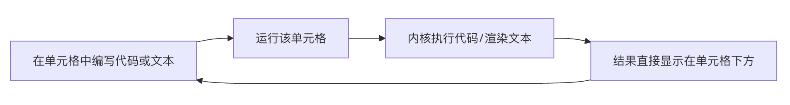

Introducción a Jupyter Notebook
Jupyter Notebook es una aplicación web de código abiertoque nos permite crear y compartir documentos que contienen código en vivo, ecuaciones matemáticas, gráficos visualizables y texto explicativo.
Podemos imaginarlo como uncuaderno de laboratorio digital e interactivo。
El nombre de Jupyter proviene de los tres lenguajes centrales que soporta:Julia、Python yR。
Jupyter evolucionó desde IPython Notebook; en sus inicios solo admitía Python, pero luego se amplió a una herramienta multilingüe, conservando el formato de archivo original..ipynb。
¿Qué problemas resuelve Jupyter?
- Análisis exploratorio: en proyectos de análisis de datos o aprendizaje automático, a menudo necesitas probar diferentes fragmentos de código y ver los resultados de inmediato. La interactividad de Notebook existe precisamente para esto.
- Enseñanza y aprendizaje: el código, los comentarios, los gráficos y las explicaciones pueden combinarse perfectamente, lo que lo convierte en una herramienta ideal para crear tutoriales o notas de autoaprendizaje.
- Investigación reproducible: todo el proceso de análisis (código, datos, resultados) se guarda en un solo archivo, de modo que otras personas pueden reproducir completamente tu trabajo.
- Prototipado rápido: puedes construir ideas rápidamente y probar el código por secciones, sin necesidad de ejecutar todo el script.
Entendamos sus características interactivas a través de un diagrama de flujo de trabajo central:

Como se muestra en la imagen superior, se trata de un ciclo ininterrumpido de «escribir -> ejecutar -> ver -> modificar». Sin necesidad de salir de esta interfaz, puedes completar todo el trabajo de exploración, depuración y registro.
Para que el contenido sea más atractivo y fácil de entender, lo haré mediantecomparaciones por escenarios、analogías visuales和extracción de la lógica centralpara optimizar este contenido educativo.
¿Por qué se necesita Jupyter?
Muchos principiantes se preguntan: ya tengo PyCharm, Word y el Bloc de notas, ¿por qué debería aprender además Jupyter Notebook?
Podemos entenderlo con una analogía simple: si PyCharm es una línea de producción de fábrica, entonces Jupyter Notebook esel manual de experimentos de un laboratorio científico。
Tabla comparativa de ventajas clave
| Dimensión de comparación | Código tradicional (.py) | Herramientas de documentación (Word/Markdown) | Jupyter Notebook (.ipynb) |
|---|---|---|---|
| Composición del contenido | Solo código | Solo texto e imágenes estáticas | Código + resultados de ejecución + gráficos interactivos + documentación explicativa |
| Método de ejecución | Debe ejecutar todo el archivo desde el principio | No puede ejecutar código | Ejecución por segmentos:Haz clic donde lo necesites y los resultados intermedios se conservan permanentemente |
| Escenarios de uso | Construcción de grandes proyectos, despliegue de proyectos | Redacción de informes, toma de notas | Análisis de datos, experimentos algorítmicos, demostraciones didácticas, prototipado rápido |
Las tres grandes herramientas de Jupyter
- Retroalimentación inmediata:En PyCharm, debes ejecutar todo el script para ver la salida. En Jupyter, puedes escribir una línea y ejecutarla de inmediato,los resultados de la ejecución (incluso los gráficos) se muestran directamente debajo del código。
- Programación literaria:Rompe la barrera entre código y documentación. Puedes, como en un blog, insertar explicaciones elegantemente formateadas entre dos bloques de código, ideal para crearnotas de estudio或informes de experimentos。
- Ligero y de bajo umbral de entrada:En comparación con la compleja configuración de proyectos de los IDE (intérprete, entorno virtual, indexación, etc.), Jupyter es más liviano y muy adecuado para validar rápidamente una idea sin necesidad de crear un montón de carpetas.
- Utiliza pares clave-valor para registrar: qué línea es código, qué línea es texto, y qué gráfico produjo la ejecución del código.
- Ventajas:Esto significa que tiene una extraordinariaportabilidad.Puedes compartirlo fácilmente en GitHub o convertirlo a PDF, HTML.
- Componentes centrales:CombinaIPython(Python interactivo mejorado),ØMQ(cola de mensajes eficiente) yTornado(servidor web de alto rendimiento).
- Soporte multilingüe (Kernels):¿Qué es un kernel? Un kernel es un programa independiente encargado de ejecutar código, completar y verificar.
- Diseño desacoplado:El kernel no depende de un documento específico; puede ejecutarse localmente o desplegarse en un servidor remoto.
- Extensibilidad integral:Actualmente admite, incluyendo entre ellos Python, R, Julia, Haskell,más de 100lenguajes de programación (su nombreJu-Py-Terproviene precisamente de Julia, Python y R).
- nbconvert (la herramienta milagrosa de exportación):Como una navaja suiza, convierte Notebooks a PDF, HTML, Markdown, e incluso diapositivas (Reveal.js) y LaTeX.
- nbviewer (vista previa en línea):Es un servicio basado en Web: basta con darle una URL pública de Notebook y lo renderiza dinámicamente como una página web elegante, sin que el destinatario necesite instalar ningún software.
- Soporte nativo de la nube:Casi todos los principales proveedores de nube utilizan Jupyter como interfaz frontal de sus plataformas de IA.
- Google Colab：Entorno Jupyter en la nube gratuito, con integración profunda con Google Drive y soporte de GPU.
- Amazon SageMaker：Para construir, entrenar e implementar modelos de aprendizaje automático.
- MS Azure Notebooks：Entorno de colaboración en la nube proporcionado por Microsoft.
¿Qué es el archivo .ipynb?
Para dominar mejor Jupyter, necesitamos comprender a fondo.ipynbla esencia del archivo.
1. En el fondo es JSON (formato de intercambio de datos)
Aunque en la pantalla vemos una interfaz elegante, si abres a la fuerza con el Bloc de notas.ipynbel archivo, descubrirás que en realidad es un fragmento detexto JSON estructurado。
2. Renderizado: del galimatías a la obra de arte
.ipynbEl archivo en sí es solo la materia prima; necesita unmotor de renderizado(como el software Jupyter Notebook, la extensión de VS Code o el visor de GitHub) para transformarlo en la interfaz interactiva que conocemos.
💡 Reflexión profunda:
Imagina que.ipynbes como unapartitura(código fuente JSON), y el software Jupyter esel pianoLa partitura por sí sola no emite sonido, pero con un piano, en manos de cualquiera, puede tocar una melodía maravillosa (la lógica del código y los resultados visuales).
Arquitectura técnica y ecosistema de Jupyter
Jupyter no es solo una ventana para escribir código; es un poderoso ecosistema compuesto por múltiples componentes centrales.
1. Arquitectura técnica: de REPL a los kernels multilingües
El núcleo de Jupyter es unmodelo de computación interactivoSe basa en el navegador y ofreceREPL(bucle de lectura-evaluación-impresión), que está respaldado internamente por las siguientes tecnologías de alto nivel:
2. Conversión y visualización de archivos (nbconvert & nbviewer)
Los documentos de Jupyter (.ipynb) son en esenciaformato JSONPara romper la limitación de «solo se puede ver si se tiene instalado Jupyter», el ecosistema ofrece dos grandes herramientas:
3. De Notebook al ecosistema completo
Con la evolución del proyecto, Jupyter ha pasado de ser una herramienta única a una línea de productos que satisface necesidades de diferentes escalas:
| Etapa / Herramienta | Posicionamiento y características | Escenarios aplicables |
|---|---|---|
| Jupyter Notebook | Versión clásica independiente, con interacción simple de celdas. | Notas personales, prototipado rápido, demostraciones didácticas. |
| JupyterLab | Interfaz de usuario de próxima generaciónIntegra terminal, explorador de archivos, editor de texto y soporta diseño de múltiples ventanas. | Desarrollo a nivel de producción, flujos de trabajo de ciencia de datos multitarea. |
| JupyterHub | Plataforma de gestión multiusuarioSe admite la generación y gestión de múltiples entornos Notebook independientes. | Colaboración en equipos empresariales, plataforma de laboratorio para cursos universitarios. |
4. Nube y aplicaciones industriales: el boleto de entrada a la era del big data
El paradigma interactivo de Jupyter ha cambiado profundamente los campos de la investigación científica y la ingeniería. Después de 2018, su popularidad incluso superó a la herramienta tradicional Mathematica.
Otras extensiones💡 Consejo histórico:
El predecesor de Jupyter es el nacido en 2011IPython NotebookHasta 2015, para reflejar su soporte para múltiples idiomas, se renombró oficialmente como Jupyter. Esta inspiración de interacción tipo cuaderno se remonta al Mathematica de los años 80.
Haz clic para compartir notas
<p style="font-size:14px;">¡La nota debe ser una extensión del contenido de este artículo!</p><br> <p style="font-size:12px;"><a href="../tougao.html" target="_blank">Para enviar un artículo, haz clic aquí</a></p> <p style="font-size:14px;"><a href="../w3cnote/runoob-user-test-intro.html" target="_blank">Cómo obtener el código de invitación para registrarse</a></p> <h3 class="text-muted"><i class="fa fa-info-circle" aria-hidden="true"></i> Antes de compartir notas, debes <a href=";.html" class="runoob-pop">iniciar sesión</a>.</h3> <p><a href="../w3cnote/runoob-user-test-intro.html" target="_blank">Cómo obtener el código de invitación para registrarse</a></p>